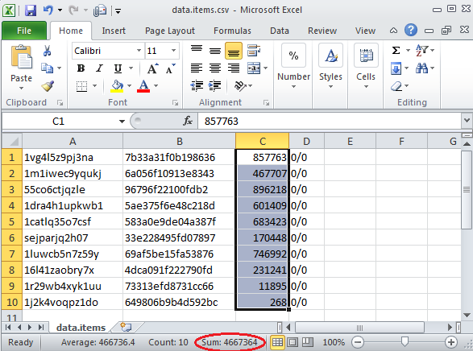

-
REPORTING
Run report is a set of files Mongoose produces in a directory <MONGOOSE_DIR>/log/<RUN_ID>. Starting with Mongoose 0.8, all the key log files (items.csv, perf.avg.csv, perf.trace.csv, and perf.sum.csv) are produced in pure CSV format. You can use any mature tool that supports CSV format to open and process report components.
As an example, suppose we had a Mongoose run that produced 10 data items of random size and we would like to calculate total size of the generated content. You can easily get the result by opening items.csv in any spreadsheet editor and selecting the third column with data item sizes. The total size can be found on a status bar as a Sum value.

-
LOAD TYPES
-
Write
Example scenarios location: scenario/write/*.json
-
Create
Mongoose creates the items by default (if load type is not specified). So it's enough just to run the default scenario:
-
Create the data items with fixed specified size
-
Create the data items with random size in the specified range
-
Create the data items with random size in the specified range and with biased size distribution
-
Update
In order to enable the update mode for the Write load type it's neccessary to specify the random byte ranges count.
Example scenarios location: scenario/partial/update-multiple-random-ranges.json
The example below performs the data items update from the specified source file with 10 random byte ranges per request.
-
Append
In order to enable the append mode for the Write load type it's neccessary to specify the fixed byte range with start offset equal to the size of the data items which should be updated.
Example scenarios location: scenario/partial/append.json
The example below performs the data items append from the size of 4KB to the size of 8KB. Note that the source data items should have the size of 4KB.
-
Read
In order to use Read load type it's neccessary to set "read" value to the "load.type" configuration parameter.
Example scenarios location: scenario/read/*.json
-
Verification
Example scenarios location: scenario/read/read-verify-updated.json
-
Disable Verification
Example scenarios location: scenario/read/read-no-verify.json
java -Dload.type=read -Ditem.data.verify=false -Ditem.dst.container=<CONTAINER_WITH_ITEMS> ... -jar mongoose-<VERSION>/mongoose.jar -f mongoose-<VERSION>/scenario/default.json
-
Delete
In order to use Read load type it's neccessary to set "delete" value to "load.type" configuration parameter.
Example scenarios location: scenario/delete/*.json
java -Dload.type=delete -Ditem.dst.container=<CONTAINER_WITH_ITEMS> ... -jar mongoose-<VERSION>/mongoose.jar -f mongoose-<VERSION>/scenario/default.json
-
LOAD JOB LIMIT
Example scenarios location: scenario/limit/*.json
It's possible to limit the load jobs by any combination of 4 possible ways.
-
Limit by Count
Example scenarios location: scenario/limit/by-count.json
Load with no more than N items:
java -Dload.limit.count=<N> ... -jar mongoose-<VERSION>/mongoose.jar -f mongoose-<VERSION>/scenario/default.json
-
Limit by Time
Example scenarios location: scenario/limit/by-time.json
Perform a load job for no more than 1 hour:
java -Dload.limit.time=1h ... -jar mongoose-<VERSION>/mongoose.jar -f mongoose-<VERSION>/scenario/default.json
-
Limit by Rate (Throttling)
Example scenarios location: scenario/limit/by-rate.json
Perform a load job with the rate of no more than 1234.5 items (and operations) per second.
java [-Ditem.data.size=0] -Dload.limit.rate=1234.5 [-Dload.threads=1000] ... -jar mongoose-<VERSION>/mongoose.jar -f mongoose-<VERSION>/scenario/default.json
-
Limit by Size
Example scenarios location: scenario/limit/by-size.json
Load with data items having the summary size of no more than 100GB:
java -Dload.limit.size=100GB ... -jar mongoose-<VERSION>/mongoose.jar -f mongoose-<VERSION>/scenario/default.json
-
RUN MODES
-
Standalone Mode
Mongoose runs in the standalone mode by default
java -jar mongoose-<VERSION>/mongoose.jar -f <PATH_TO_SCENARIO_FILE>
-
Distributed Mode
Example scenarios location: scenario/distributed/*.json
-
Load Server
java -jar mongoose-<VERSION>/mongoose.jar server
-
Load Client
java -jar mongoose-<VERSION>/mongoose.jar client -f <PATH_TO_SCENARIO_FILE>
-
Storage Mock
java -jar mongoose-<VERSION>/mongoose.jar wsmock
-
Web GUI
java -jar mongoose-<VERSION>/mongoose.jar webui
-
ITEM TYPES
-
Container
In order to perform a load with container items it's neccessary to set "container" value to the "item.type" configuration parameter.
Example scenarios location: scenario/container/*.json
-
Write the containers
Example scenarios location: scenario/container/write-containers.json
java -Ditem.type=container ... -jar mongoose-<VERSION>/mongoose.jar -f mongoose-<VERSION>/scenario/default.json
-
Read the containers with Data Items
Example scenarios location: scenario/container/read-containers-with-items.json
java -Ditem.type=container -Dload.type=read -Ditem.src.file=<PATH_TO_ITEMS_LIST_CSV_FILE> ... -jar mongoose-<VERSION>/mongoose.jar -f mongoose-<VERSION>/scenario/default.json
Total byte count and bytes per second (BW) metrics are calculated while reading the containers with data items. The size of the container is calculated as a sum of the included data items sizes.
-
Delete the containers
Example scenarios location: scenario/container/delete-containers.json
java -Ditem.type=container -Dload.type=delete -Ditem.src.file=<PATH_TO_ITEMS_LIST_CSV_FILE> ... -jar mongoose-<VERSION>/mongoose.jar -f mongoose-<VERSION>/scenario/default.json
-
Data
The "data" item type is used by default.
-
CLOUD STORAGE API
-
Amazon S3
Example scenarios location: scenario/ecs/write-s3.json
- S3 API is used by default
- Specifying the container name in the case of S3 API means specifying the bucket to use.
java -Dauth.id=<USER_ID> -Dauth.secret=<SECRET> [-Ditem.dst.container=<TARGET_BUCKET>] -Dstorage.addrs=10.20.30.40 -Dstorage.port=8080 -jar mongoose-<VERSION>/mongoose.jar -f mongoose-<VERSION>/scenario/default.json
-
EMC Atmos
Example scenarios location: scenario/ecs/write-atmos.json
java -Dauth.id=<USER_ID> [-Dauth.token=<SUBTENANT>] -Dauth.secret=WQmcQh5UYRAWYqJGCVEueihGBZ7h6nI2vHHwYmPg -Dstorage.addrs=10.20.30.40 -Dstorage.port=8080 -Dstorage.http.api=atmos -jar mongoose-<VERSION>/mongoose.jar -f mongoose-<VERSION>/scenario/default.json
-
OpenStack Swift
Example scenarios location: scenario/ecs/write-swift.json
java -Dauth.id=<USER_ID> [-Dauth.token=<TOKEN>] -Dauth.secret=<SECRET> [-Ditem.dst.container=<TARGET_CONTAINER>] -Dstorage.addrs=10.20.30.40 -Dstorage.port=8080 -Dstorage.http.api=swift -Dstorage.http.namespace=<NS> -jar mongoose-<VERSION>/mongoose.jar -f mongoose-<VERSION>/scenario/default.json
The default value of "storage.http.namespace" configuration parameter (null) doesn't work in the case of Swift API usage.
-
EMC ECS
Example scenarios location: scenario/ecs/*.json
-
S3
java -Dauth.id=wuser1@sanity.local -Dauth.secret=<SECRET> [-Ditem.dst.container=<TARGET_BUCKET>] -Dstorage.addrs=10.20.30.40,10.20.30.41,10.20.30.42 -Dstorage.port=9020 -jar mongoose-<VERSION>/mongoose.jar -f mongoose-<VERSION>/scenario/default.json
-
Atmos
java -Dauth.id=wuser1@sanity.local [-Dauth.token=<SUBTENANT>]10.20.30.40,10.20.30.41,10.20.30.42 -Dstorage.port=9022 -jar mongoose-<VERSION>/mongoose.jar -f mongoose-<VERSION>/scenario/default.json
-
Swift
java -Dauth.id=wuser1@sanity.local [-Dauth.token=<TOKEN>] -Dauth.secret=<SECRET> [-Ditem.dst.container=<TARGET_CONTAINER>] -Dstorage.addrs=10.20.30.40,10.20.30.41,10.20.30.42
-
FILESYSTEM LOAD
In order to use Filesystem load engine it's neccessary to set "fs" value to the "storage.type" configuration parameter.
Example scenarios location: scenario/fs/*.json
-
Write to the custom directory
Example scenarios location: scenario/fs/write-to-custom-dir.json
java -Ditem.dst.container=<PATH_TO_TARGET_DIR> -Dstorage.type=fs -jar mongoose-<VERSION>/mongoose.jar -f mongoose-<VERSION>/scenario/default.json
-
Read from the custom directory
Example scenarios location: scenario/fs/read-from-custom-dir.json
java -Ditem.dst.container=<PATH_TO_TARGET_DIR> [<ITEM_SRC_FILE_OR_CONTAINER>] -Dload.type=read -Dstorage.type=fs -jar mongoose-<VERSION>/mongoose.jar -f mongoose-<VERSION>/scenario/default.json
-
Overwrite the files circularly
Example scenarios location: scenario/fs/overwrite-circularly.json
java -Dload.type=update -Ditem.dst.container=<PATH_TO_TARGET_DIR> [<ITEM_SRC_FILE_OR_CONTAINER>] -Dload.circular=true -Dstorage.type=fs -jar mongoose-<VERSION>/mongoose.jar -f mongoose-<VERSION>/scenario/default.json
-
CUSTOM CONTENT
An user may use a custom file as the content source for the data generation and verification. This custom file path should be specified as the "item.data.content.file" configuration parameter. There are two predefined content source files: conf/content/textexample and conf/content/zerobytes.
Example scenarios location: scenario/content/*.json
The same content source should be used for the data items writing and subsequent reading in order to pass data verification
-
Text content
java -Ditem.data.content.file=mongoose-<VERSION>/conf/content/textexample ... -jar mongoose-<VERSION>/mongoose.jar -f mongoose-<VERSION>/scenario/default.json
-
Zero bytes content
java -Ditem.data.content.file=mongoose-<VERSION>/conf/content/zerobytes ... -jar mongoose-<VERSION>/mongoose.jar -f mongoose-<VERSION>/scenario/default.json
-
CIRCULAR LOAD
In order to load with the fixed set of the items "infinitely" (each items is being written/read again and again) an user should set the configuration parameter "load.circular" to true.
Example scenarios location: scenario/circular/*.json
-
Read
java -Dload.type=read -Ditem.data.verify=false -Ditem.dst.container=<CONTAINER_WITH_ITEMS> [<ITEM_SRC_FILE_OR_CONTAINER>] -Dload.circular=true ... -jar mongoose-<VERSION>/mongoose.jar -f mongoose-<VERSION>/scenario/default.json
-
Update
java -Ditem.data.verify=false -Ditem.dst.container=<CONTAINER_WITH_ITEMS> [<ITEM_SRC_FILE_OR_CONTAINER>] -Ditem.data.ranges=1 -Dload.circular=true ... -jar mongoose-<VERSION>/mongoose.jar -f mongoose-<VERSION>/scenario/default.json
-
SCENARIO
-
Configure a Load Job
-
Make a Precondition Load Job (don't persist the metrics)
-
Sequential Load Jobs execution
-
Parallel Load Jobs execution
-
Reuse the Items for another Load Job
-
Inherit the Load Job Container configuration
-
Execute a Shell Command
-
Start a Non-Blocking Shell Command Execution
-
Sleep Between the Load Jobs
-
Mixed Load
Please refer to example scenarios located at: scenario/mixed/*.json
-
Weighted Load
Please refer to example scenario located at: scenario/weighted/*.json
-
Rampup
-
Scenario Validation
There are a JSON schema file in the distribution: scenario/scenario-schema.json. An user may automatically validate the scenarios using this schema. This should help to write one's own custom scenario.
-
DYNAMIC CONFIGURATION VALUES
Example scenarios location: scenario/dynamic/*.json
-
Custom HTTP Headers
Example scenarios location: scenario/dynamic/custom-http-headers.json
java -Dhttp.customHeaders.myOwnHeaderName=MyOwnHeaderValue -jar mongoose-<VERSION>/mongoose.jar -f mongoose-<VERSION>/scenario/default.json
-
Custom HTTP Headers with dynamic values
Example scenarios location: scenario/dynamic/custom-http-headers-with-dynamic-values.json
java -Dhttp.customHeaders.myOwnHeaderName=MyOwnHeaderValue\ %d[0-1000]\ %f{###.##}[-2--1]\ %D{yyyy-MM-dd'T'HH:mm:ssZ}[1970/01/01-2016/01/01] -jar mongoose-<VERSION>/mongoose.jar -f mongoose-<VERSION>/scenario/default.json
-
Filesystem Load: dynamic target path
Example scenarios location: scenario/dynamic/write-to-variable-dir.json
java -Ditem.dst.container=<PATH_TO_TARGET_DIR>/%p{16;2} -Dstorage.type=fs ... -jar mongoose-<VERSION>/mongoose.jar -f mongoose-<VERSION>/scenario/default.json
-
CUSTOM ITEM NAMING
Example scenarios location: scenario/naming/*.json
-
Ascending names order
java -Ditem.naming.type=asc ... -jar mongoose-<VERSION>/mongoose.jar -f mongoose-<VERSION>/scenario/default.json
-
Descending names order
java -Ditem.naming.type=desc ... -jar mongoose-<VERSION>/mongoose.jar -f mongoose-<VERSION>/scenario/default.json
-
Names with decimal identifiers
java -Ditem.naming.radix=10 ... -jar mongoose-<VERSION>/mongoose.jar -f mongoose-<VERSION>/scenario/default.json
-
Names with prefixes
java -Ditem.naming.prefix=item_ ... -jar mongoose-<VERSION>/mongoose.jar -f mongoose-<VERSION>/scenario/default.json
-
COPY MODE
Example scenarios location: scenario/copy/*.json
The example below performs the items copying from the source container to the target container:
java [-Ditem.dst.container=<TARGET_CONTAINER>] -Ditem.src.container=<SOURCE_CONTAINER> [-Ditem.src.file=<PATH_TO_ITEMS_LIST_CSV_FILE>] ... -jar mongoose-<VERSION>/mongoose.jar -f mongoose-<VERSION>/scenario/default.json
See functional specification for details
-
SSL/TLS SUPPORT
The feature is available since v2.1.0
Example scenarios location: scenario/ssl/*.json
java -jar mongoose-2.1.0/mongoose.jar -f scenario/ssl/write-single-item.json
or
java -Dnetwork.ssl=true -Dstorage.port=9021 ... -jar mongoose-2.1.0/mongoose.jar
-
MISCALLENOUS
Docker Integration
Please refer to Mongoose Usage/Docker page for reference
-
Disable console output coloring
Go to the file conf/logging.json using the text editor, then go to the line ~#45 in the attribute "pattern" value remove the leading "%highlight{" and trailing "}" characters